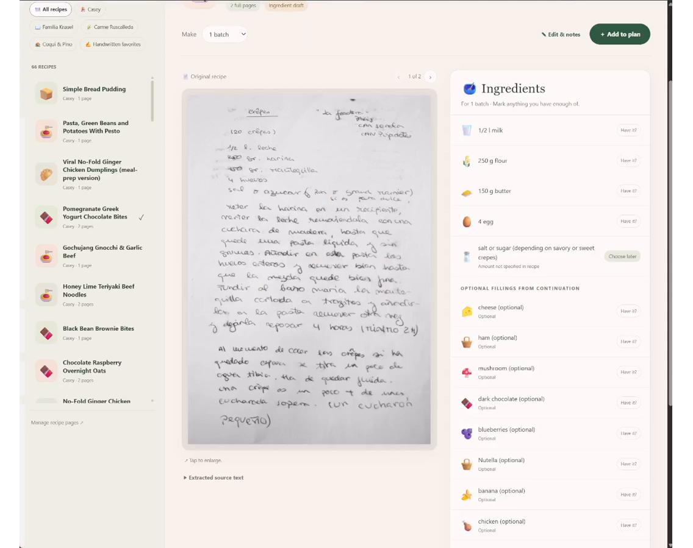

recetas02 / 11
The original recipe stays with us
Recipes start as scanned PDFs or photos, including handwritten notes.
We group pages by recipe and discard blank pages from the split files.
Keep the whole page, so nothing disappears.

Recipes start as scanned PDFs or photos, including handwritten notes.
We group pages by recipe and discard blank pages from the split files.
Keep the whole page, so nothing disappears.
